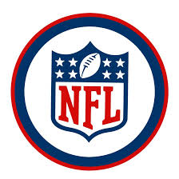

The 2025–26 NFL postseason culminated in a dominant championship run by the Seattle Seahawks, who secured their second franchise title by defeating the New England Patriots 29–13 in Super Bowl LX. Seattle’s "Dark Side" defense was the story of the playoffs, smothering opponents and capping the year with a six-sack performance against the Patriots. Running back Kenneth Walker III took home Super Bowl MVP honors after rushing for 135 yards, while kicker Jason Myers set a Super Bowl record with five field goals. This postseason was particularly notable for its changing of the guard, as it marked the first time in over a decade that the Kansas City Chiefs were absent from the bracket. The road to the Super Bowl was paved with high-stakes drama, including two overtime finishes in the Divisional Round where both the Denver Broncos and Los Angeles Rams survived defensive battles. In the Conference Championships, the Patriots pulled off a gritty 10–7 upset over the top-seeded Broncos in a Colorado blizzard, while the Seahawks narrowly defeated the Rams 31–27 at home. Other highlights included a resurgent Chicago Bears team winning a Wild Card thriller against the Packers and the Houston Texans showcasing their future with a dominant playoff win over the Steelers. Ultimately, Seattle's consistency as the NFC’s #1 seed proved too much for a field defined by narrow margins and defensive standouts.
The 2025-26 NFL awards, presented at the 15th annual NFL Honors in February 2026, were highlighted by one of the tightest MVP races in history, where Matthew Stafford of the Los Angeles Rams narrowly edged out Patriots rookie sensation Drake Maye by just five voting points. Defensive honors were dominated by the Cleveland Browns, as Myles Garrett was named a unanimous Defensive Player of the Year after a record-breaking 23-sack season, while his teammate Carson Schwesinger took home Defensive Rookie of the Year. On the offensive side, Seattle’s Jaxon Smith-Njigba secured Offensive Player of the Year after leading the league in receiving yards, and Panthers wideout Tetairoa McMillan was crowned Offensive Rookie of the Year. The night also celebrated Christian McCaffrey’s resilient return to form as the Comeback Player of the Year and recognized Mike Vrabel’s immediate impact in New England with the Coach of the Year award. Additionally, the evening featured the induction of a legendary Pro Football Hall of Fame class including Drew Brees, Larry Fitzgerald, Luke Kuechly, and Adam Vinatieri.

Image by unknown from StockVault